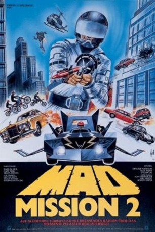
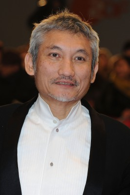
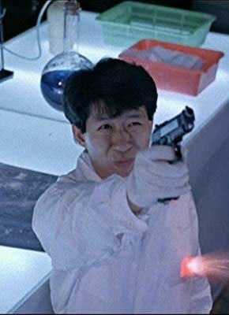

#11591 Mad Mission 2 - Heißes Pflaster Unterwelt
Alternativ: Mad Mission Part 2: Aces Go Places (Englischer Titel)
 
 IMDB-Wertung: 6.8 / 10
IMDB-Wertung: 6.8 / 10  Metascore: 0
Metascore: 0 
Das American Bureau of Investigation (ABI) schickt ihren härtesten Mann, Filthy Harry, nach Hongkong, um eine Sammlung Diamanten zurückzuholen und den Mann zu beseitigen, der sie gestohlen hat. Eine rücksichtslose Gang, ist im Auftrag einer italienischen Vereinigung auch hinter den Diamanten her...
Jahr: 1983
Dauer: 108 Minuten
FSK: 12
Land: Hong-Kong Studio: Astro DistributionTonspuren:
Untertitel: Deutsch,
Auflösung: 1080p (1920x1080) Größe: 19763 MB
Genre: Action, Komödie
Regisseur:  Eric Tsang
Eric Tsang
Drehbuch: Raymond Bak-Ming Wong
Soundtrack: Teddy Robin Kwan
Darsteller:
 Samuel Hui als King Kong
Samuel Hui als King Kong Karl Maka als Albert Au
Karl Maka als Albert Au Sylvia Chang als Supt. Nancy Ho
Sylvia Chang als Supt. Nancy Ho Yasuaki Kurata als Bull
Yasuaki Kurata als Bull Tat-Wah Cho als Hua
Tat-Wah Cho als Hua-  Hark Tsui als FBI
 Kwok Choi Hon als Squealie
Kwok Choi Hon als Squealie Eric Tsang als Fattie
Eric Tsang als Fattie Billy Lau als Bull's Thug
Billy Lau als Bull's Thug- Lo Gin als Bull's Thug
- Ka Ting Lee als Gang Leader in Club
- Lap Ban Chan als Old Lady Eating Dinner
- Charlie Cho als Wong
- Raymond Bak-Ming Wong als Priest
- Shirley Kwan als Gangster in Club
- King Chu Lee als Gangster in Club
-  Wai Cheung Mak als Gangster in Club
- Ming-Wai Chan als Gangster in Club
 Wing-Hon Cheung als Gangster in Club
Wing-Hon Cheung als Gangster in Club- Joe Dimmick als Black Gloves
- Ting-Huan Wang als Juju
- Leung-Fat Lau als Mental Patient Doctor
- San Tai als Bull's Thug
- Ha-Lei Yip als Old Man Eating Dinner
- Ngai-Dik Man als Man Painting Boat
- Kwok-Kin Ng als Policeman
- Wellington Fung als Doctor
- Glenn Thompson als White Gloves
- Carroll Gordon als Ding Dong
- Sung-Hao Hsu als Man Chasing Juju
- Te-Wei Chu als Man Chasing Juju
- Fei-Hung Mak als Man Chasing Juju
- Hao-ming Liu als Gangster in Club
 Hou Hsiao als Gangster in Club
Hou Hsiao als Gangster in Club- Hsi-Chun Yang als Gangster in Club
- Hector Britt als
- Suzanna Valentino als
- Hsueh-Ming Liao als
- Kwok Keung Chan als
Datei: X:\HD-Eastern-Collections\Mad Mission\Mad Mission 2 - Heißes Pflaster Unterwelt (1983, FSK12, 1920x1080).mkv seit 01.08.2019
Festplatte: HD Eastern+Western
 Es gibt insgesamt 7 Filme in der Gruppe 'HD-Eastern-Collections\Mad Mission'
Es gibt insgesamt 7 Filme in der Gruppe 'HD-Eastern-Collections\Mad Mission'